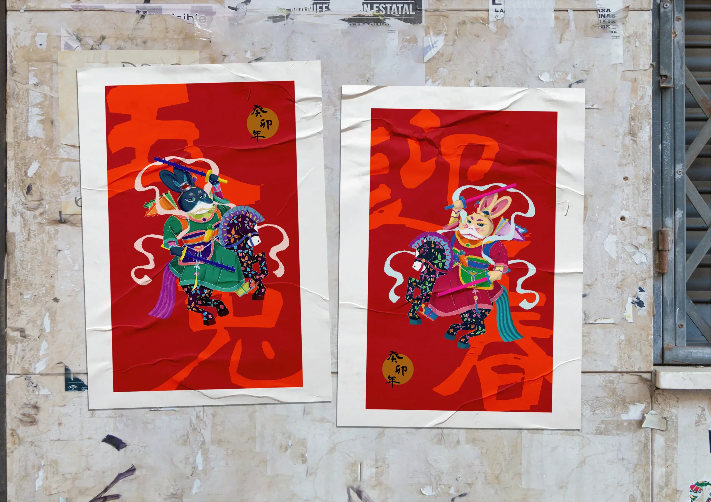
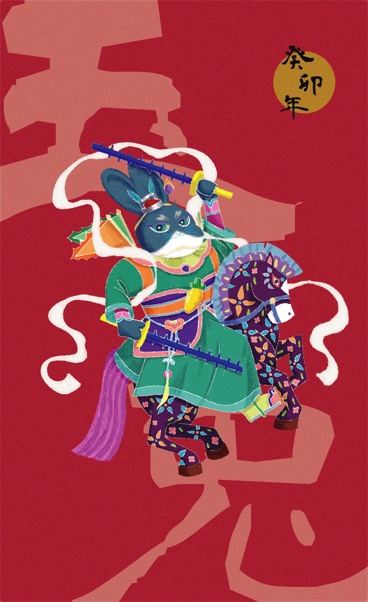
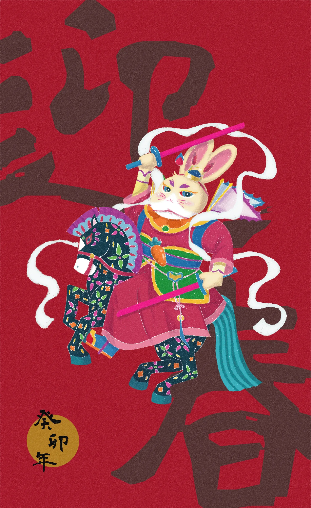

YEAR OF THERABBIT
癸卯兔迎春癸卯・うさぎ年の春
插畫設計｜2023イラストデザイン｜2023
Design Concept｜設計概念Design Concept｜デザインコンセプト
- CATEGORY
- ILLUSTRATION / VISUAL DESIGN
- SIZE
- 80 x 80 350dpi
- CREDIT
- KAYA
以癸卯年的黑兔、金兔與五行意象為靈感，將兔子塑造成手持鞭與金鐧的神將，呈現財運、守護與勇猛氣勢。
癸卯年の黒兎・金兎と陰陽五行から着想し、鞭と金鐧を手にした神将として描きました。財運や守護、勇ましさを表現しています。